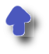
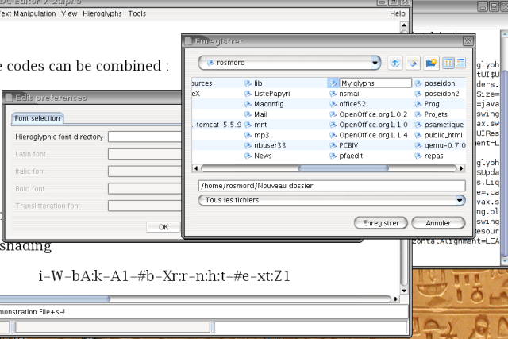
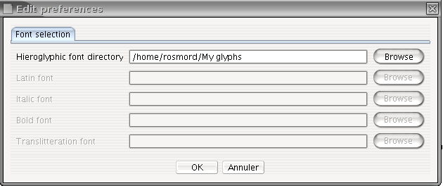
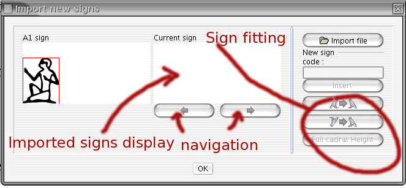
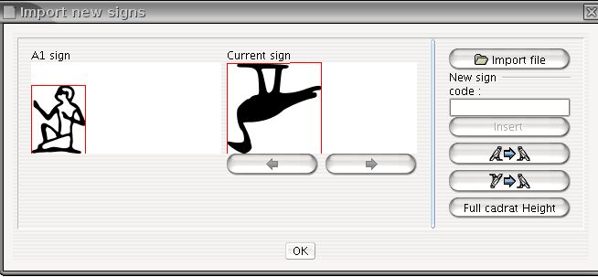
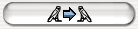
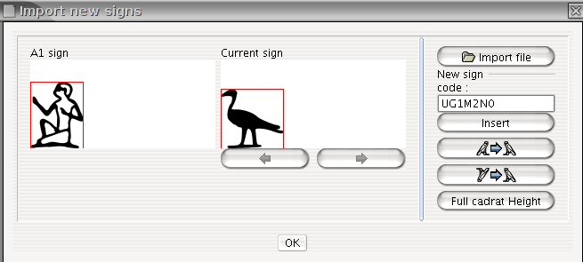

Editing and inserting new signs
Introduction
From version 2.0beta onward, users of JSesh can create their own signs.
A sign editor and an elaborate database system are planned in the
future, but, on a more practical sign, it was decided to allow one to
import signs created with various softwares.
So : a) JSesh has currently no sign editor, but b) JSesh can
import signs from :
- true type fonts (see fontforge for a free editor) ;
- SVG files : SVG is a relatively recent format for vector graphics.
It's very powerfull and complete. Currently, JSesh understands SVG
files if the sign is drawn in black over white. You can edit SVG files
with a number of programs; one of the best free ones is Inkscape, which
has the advantage of being multi-platform.
- font files exported from tksesh (.tml files)
- font files from the GNU font utils (.bzr files). Both types of
files can be edited with the fontedit software, included in tksesh.
Inserting new signs
Choosing a directory for your signs
In order to be able to add new signs, you must first choose
where
they will be stored on your computer. To do this, simply select
Tools/Edit Preferences
In the "Font Selection" tab (currently the only one available), enter
the directory you want to use in the "Hieroglyphic font directory"
field. You should create an empty directory for this specific purporse.

creating a directory

The directory is selected
You only have to do this once. Next invocations of JSesh will use this
directory.
Actual sign insertion
To add new signs, you should import them from a file created with
another software, and then assign new codes to the created signs. The
sign importing interface can be started from the menu
Tools/add new signs
.
Sign importing is done in two phases :
- you import a picture or set of pictures from some file (svg
drawings, truetype fonts, etc.)
- you assign a code for each sign you have imported, and then you
insert the new sign in the JSesh list of signs.

New signs importing interface
Importing drawings
Importing drawings is easy. JSesh can read:
- true type fonts
- .tml and bzr files, which can be created with JSesh's forerunner,
tksesh.
- SVG files
Simply click on the "import file" button, and select the file which
contains your picture(s). You can use the navigation buttons (those with
arrows) to browse the available signs.
Fine tuning your signs
In some cases, the size or orientation of your signs won't be correct.
For instance, in the picture below, the duck is too large and its
orientation is wrong.

You can correct this :
- the buttons

and can be used to change the
sign orientation;
- the button "Full cadrat height" gives the sign the same size as the
A1 sign;
- if you click on the sign's window and drag the mouse, the mouse
position will set the sign's height.
Attaching codes to drawings, and inserting them in JSesh
Once your sign is correct, it's time to give it a name. In a number of
cases, JSesh will have guessed one, but this doesn't mean the sign has
been registered in its list. Nothing is done when as long as you haven't
pressed the insert button.
Be carefull when giving signs a name. You want your files to be
readable by anyone, so be faithfull to the "Manuel de codage". The codes
you can give are
- (recommanded system) User sign codes.
When an user can add his own signs to a hieroglyphic typesetting system, there's no problem until the text is shared with other
users, but then it gets tricky because there is always a possibility of conflict between the codes given to the various signs.
The simple proposition we make is the following:
we provide each user with a unique ID (a simple number). Then, anyone can create new codes of the form
USuid + gardiner-like code, where uid is the user id. For instance, the present author, being the first user of his own software, has id 1. If he wanted to
create his own form of A1, he could call it US1A1, or, to emphasise that it's a variant US1A1A.
to get an uid, send a mail to rosmord@iut.univ-paris8.fr. Note for tksesh users: the uid is simply your tksesh id.
- standard manuel de codage code. You will find these codes in
Hannig's WB, for instance. A number of lists are also available on the
web. Please, note that using the codes is one thing, but that the
actual signs drawing in the fonts of other softwares are legally
protected. So, have to come with you own versions of the signs, either
from actual sources or by re-creating them. You will find more
information on signs drawing in the next section. In our example, your
duck would replace the normal one, so it would have code "G39".
We suggest that, if you create a sign with an "normal" gardiner code, you also give it an user sign code. This way, you will be sure to keep it even
it a sign with this Gardiner code is later added to the software.

Inserting the duck sign as UG1M2N0
Note that for compatibility with tksesh, we also support arbitrary
"user glyph codes". These codes correspond to the codes tksesh gave to new signs.
User glyph codes have the form UGidMmidNsid,
where id, mid, and sid are numbers. Avoid using those codes for now.
When your sign is ready, click on the insert button.
ROSMORDUC Serge
Last modified: Thu Nov 3 14:42:09 CET 2005